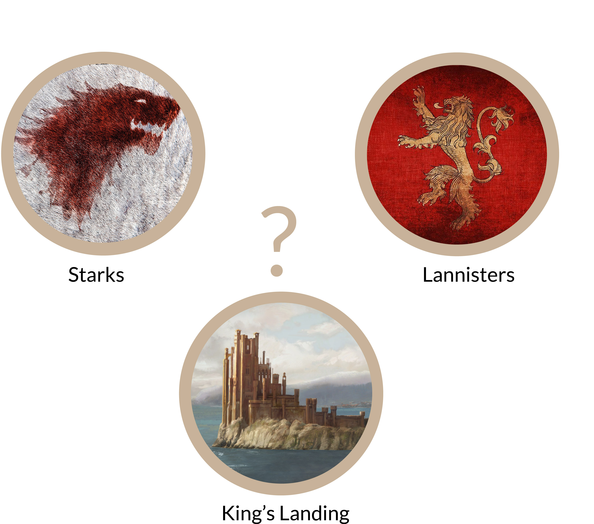
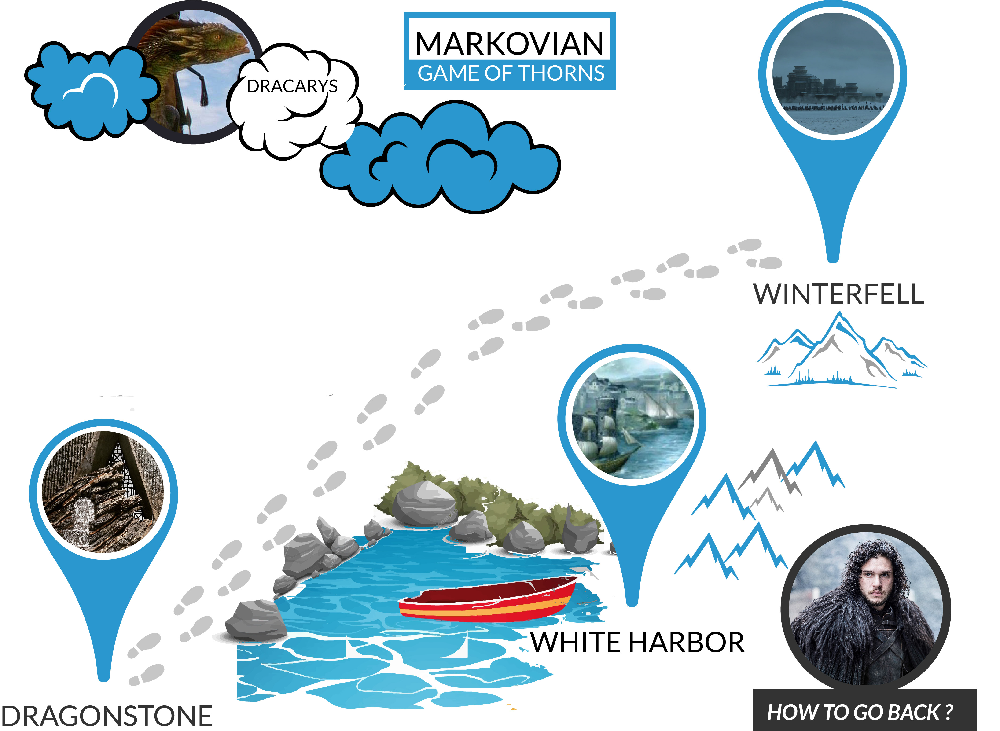

Spoiler Alerts for GOT Fans
It is highly recommended to watch Game of thrones season 1 to 7 before going ahead. This blog is for GOT Fans who want to build AI Whitewalkers for army of dead.Pandora Box of Reinforcement Learning
Reinforcement learning ! Sounds sassy, doesn't it ? Well it actually is. Imagine if you could teach a machine how to behave in an environment based on rewards or punishments. Just like kiddo learning to backoff from bonfire after burning his hands once. But how does it actually work. Lets grab some popcorns and heed to the dead voice.
RL in NutShell
Let us say Daenerys Targaryen is the agent we are interested in. We all know what happens when she says dracarys. The fury is unleashed and the environment changes in GOT. Each change in situation has a reward/penalty associated for Daenerys or agent. This makes improve her policies(of choosing action) and take better actions next time along with tyrion. And after the fury, she moves to a new kingdom or next state.
Must know terms in RL
Policy : To be demystified after Markov Reward ProcessState Value Function $(Vs_{\pi})$ For a given policy and environment, How good is it to be in a state? It can answer question John Snow is lingering with . . . Which state/place is more rewarding, Winterfell or Dragonstone?
Action Value Function $(Va_{\pi}(s))$ For a given policy and environment, How good is it to take action a from state s?
Rewards and Penalties
Before we go to some deep stuff, Let us understand, what is a reward. Reward is bounty associated with reaching a state. Its like the money recieved by cowboys on getting the all goats from medows to downhill. It is also the dopamine spike you get on getting your Facebook post published. There is an immediate reward R ($R(S_t)$), and there is a discounted Reward r $(r(S_t) = R(S_t)+\gamma R(S_{t+1}) + \gamma^2 R(S_{t+2}) \cdots )$. Discounted Reward is like what you get when you post controversial posts on Facebook, Immediate Rewards are good, but future rewards are extremely negetive which eventually makes you rethink in the first place about posting it. Discount is the amount of future you want to consider in your calculation. $\gamma = 1 $ means that you are considering everything in future, and $\gamma = 0$ means you are not thinking about future at all, you are only concerned with immediate reward. In practical scenarios, we keep it at around $0.9$. Markov Chain and the king's Landing
We all know the story of mad king, right? Ofcourse you need to watch GOT for that. Kings landing is highly fought out place. Lets assume that there are only two kingdoms contesting - Lannisters and Starks. Now assume that starks are holding it right now. What is the probability of them holding it in the future? Volla, Markov chain will tell it to us.
Look into the code bellow : It is pretty much self expalatory.
import numpy as np
# S: State Value of house : Its probability of retaining kings landing
# P: Transition Matrix : from houseA to houseB, what is probability of transistion.
houses = ["lannisters","starks"]
S = {"lannisters": 0, "starks":1}
P = {"from_lannisters":{"to_lannisters": 0.8, "to_starks" : 0.2 },
"from_starks": {"to_starks": 0.1, "to_lannisters": 0.9}}
for i in range(5):
lannisters_future_stateval, starks_future_stateval = 0,0;
lannisters_future_stateval = S["lannisters"]*P["from_lannisters"]["to_lannisters"]+\
S["starks"]*P["from_starks"]["to_lannisters"];
starks_future_stateval = S["lannisters"]*P["from_lannisters"]["to_starks"]+\
S["starks"]*P["from_starks"]["to_starks"];
S["lannisters"]=lannisters_future_stateval
S["starks"] = starks_future_stateval
print "Volla, '%s' have been winners with %0.2f%% probability to be in king's landing "%(max(S, key=S.get),100*max(S.values()))
In the above code, S is initiallized with [0,1] which means sharks are holding it. P stands for transition probability matrix. Therefore, P["from_lannisters"]["to_starks"] denotes the probability of succession of kings landing by starks. . Let us look at series of events in the history of succession of king's Landing.
Lannisters -> Starks -> Lannisters -> Lannisters -> Lannisters -> Starks -> Lannisters -> Lannisters -> . . .
This chain of successions is modelled and explained by the the transition matrix. What we are interested in is, steady state value of Starks or Lannisters to be in kings landing. So we start of with starks as rulers, but putting the historic truths in place to decide the fate of king's landing. We discover that Lannisters are 81% probable of being in kings landing at any point of time. You can also use this model your food habbits.
Bellman Optimality Equation
Bellman optimality equation for Markov Process states, that let us say we have 7 kingdoms fighting wars. The best measure to know which kingdom has an upperhand, is byStep 1 giving each kingdom a number (Initial State Value )
Step 2 Updating the value based on probability ( by past records) of my attacks on my neighborhood Kingdoms
$V_{\pi}$(lannisters) = p(attacking winterfell)*[immidiate reward of attacking winterfell + $\gamma$*State Value of winterfell]+same for other neighboring kingdoms . . .
Step 3 Keep repeating until convergence.
It is perfectly fine, if the optimality equation doesn't make any detailed sense right now. It is deliberately left open ended, because the equation keeps changing as per the needs and model. All you need to remember is, that there is some graphical evaluation that is happening over the states in order to obtain state value . This value mysteriously captures and assimilates all information required to make judgement about rewards, etc. This comes directly from markovian property which rips apart previous states to next states, past from future, if the present state value is provided.
Markov Reward Process for John Snow's Journey
Remember the first time when Fire and Ice Met? I am talking about John snow meeting Daenerys Targaryen ! Well we are talking about his return from Dragonstone to beyond the walls. The part very brief in series itself. So the states here are [Dragonstone,WhiteHarbor, Winterfell]. You can either go to winterfell via walk or you can go via sea to whiteharbor and then go to winterfell. But there is always some danger of spies lurking around at whiteharbor from the spies and pirates.
Markov reward process is nothing new, rather its same old markov chain, bundled with immediate rewards associated with reaching states(in our case, its reaching winterfell, reaching whiteharbor,etc). What we calculate is, that how rewarding is it for John Snow to be at a particular state/place?>. In other words we will calculate, State Value, which represents how rewarding it is to be at that State.
Calculations for the above MRP
$G_s = R_{s(t+1)} + \gamma R_{s(t+2)} + \gamma^2 R_{s(t+3)}\cdots $$v(s)=R_s+\gamma\sum_{s'\in S}P_{ss'}v(s')$
Above equations tell you how to update state value in a given environment.
$\begin{bmatrix} v(1)\\ \vdots\\ v(n) \end{bmatrix}=\begin{bmatrix} R(1)\\ \vdots\\ R(n) \end{bmatrix}+\gamma \begin{bmatrix} p_{11} & \cdots & p_{1n}\\ \vdots & \ddots & \vdots\\ p_{n1} & \cdots & p_{nn} \end{bmatrix} \begin{bmatrix} v(1)\\ \vdots\\ v(n) \end{bmatrix} $
For Linear Algera fans, the above equation may come as a blessing. It states how you can concurrently update all state value's vector by doing right product of probabilitistic Transition Matrix with itself. When it reaches steady State, the state values vector becomes a scaled eighen Vector of this transition matrix. Isn't that the very definition of eighen vector? $Av = \lambda v$
In the code, bellow, we have two extra states, called terminating states. Which means, its the end of the journey,dead or alive. R tells you the reward of being in a particular state.
# Markov Reward Process Example
# Finding Rewarding states for journey of John Snow from dragonstone to winterfell
import numpy as np
import copy
S ={"dragonstone": 1,"whiteharbor":1, "winterfell":1} # Active States
T=["alive-terminal","dead-terminal"] # Terminal States
R = {"dragonstone": 0,"whiteharbor":10, "winterfell":50,"alive-terminal":100,"dead-terminal":-50}
P ={"from_dragonstone":{"to_whiteharbor":0.5,"to_winterfell":0.1,"to_dead-terminal":0.4},\
"from_whiteharbor":{"to_winterfell":0.1,"to_dead-terminal":0.9},
"from_winterfell":{"to_alive-terminal":0.9,"to_dead-terminal":0.1}} # Probabilistic Transition Matrix
gamma = 0.1
for i in range(45):
S1 = copy.copy(S);
for castle in S1.keys():
reward =0;
from_castle='from_'+castle
future_states = P[from_castle]
for to_castle in future_states:
reward=reward+P[from_castle][to_castle]*R[to_castle[3:]];
S1[castle] = S[castle]+ gamma*(reward-S1[castle])
S = copy.copy(S1);
print S
Note that in above Markov Reward Process, we are not deciding our actions at any point. We are only evaluating the state value given an environment(i.e Transition Matrix, Immediate Rewards). The policy comes into picture only in context of Markov Decision Process, not Markov Reward Process. The power to decide comes, when we have freedom to act. Lets look into Markov Decision Process now.
Markov Decision Process - Time to act!
MDP breaks the shakles of static probabilistic policy, by learning actions. Every state can take multiple action, and each action is followed by the next state to be chosen is probabilistically. In GOT terms, we can choose to fly directly to winterfell, or we can choose to go via sea, or we can go via land. Now action is left to policy for deciding. Each action branches out to multiple states. You may ask "How can an action lead to further states(multiple)? ". You may choose to boat from dragonstone, but you can land in death (if pirates are there) or you may landup in whiteharbor. Each action can lead you to further states.Markov Decision Process - Time to act!
The mathematics of MDP and MRP are similar, but it is the context which sets it apart. MDP gives you choice. We learn policy of taking a particular action in MDP.MDP can be learned by these two algorithm -
Value Iteration
Policy Iteration
In value iteration, you don't learn policy seperately. You considering most rewarding action as the policy as well as use it for updation of state values. It tends to be a bit slower, because we are changing the best action again and again leading to turbulance. It eventually does converge, but the time taken will be generally more than Policy Iteration. Unlike Value Iteration, Policy Iteration chooses a policy, Evaluates for it, until convergence. Now it chooses a new policy based on these steady state values, and then evaluate the new policy. We keep doing this back and forth until convergence. As you can observe, there are two steps here : policy evaluation and policy update.
John Snow's way home Revisited
John Snow now wants to carry MDP machine to tell him, which action is best in a given place. The actions he can take in general are going by land, going by sea, or flying on dragon. For each action, there is a possibility to land up at different places/state. What we will learn is the best policy to be choosen from any state/place. The code is self explainatory, so you can just run this code on jupyter and know it for yourself. I am assuming all of you have numpy installed, which sounds quite reasonable.Solution by Value Iteration
# Markov Decision Process Example
import numpy as np
import copy
S ={"dragonstone": 1,"whiteharbor":1, "winterfell":1} # Active States
T=["alive-terminal","dead-terminal"] # Terminal States
R = {"dragonstone": 0,"whiteharbor":10, "winterfell":50,"alive-terminal":100,"dead-terminal":-50}
P ={"from_dragonstone":{"land":{"to_winterfell":0.5,"to_dead-terminal":0.5},\
"sea":{"to_whiteharbor":0.1,"to_dead-terminal":0.9},\
"dragon":{"to_winterfell":0.95,"to_dead-terminal":0.05}},\
"from_whiteharbor":{"land":{"to_winterfell":0.6,"to_dead-terminal":0.4}},
"from_winterfell":{"land":{"to_alive-terminal":0.9,"to_dead-terminal":0.1}}}
gamma = 0.1
A ={"from_dragonstone":{"land":1,\
"sea":1,\
"dragon":1},
"from_whiteharbor":{"land":1},
"from_winterfell":{"land":1}}
Policy = {"from_dragonstone":"land","from_whiteharbor":"land","from_winterfell":"land"}
# Solution by Value Iteration
for i in range(15):
S1 = copy.copy(S);
for castle in S1.keys():
from_castle='from_'+castle
future_states = P[from_castle]
action_reward={}
for action in A[from_castle]:
reward =0;
for to_castle in future_states[action]:
reward=reward+P[from_castle][action][to_castle]*R[to_castle[3:]];
action_reward[action]=reward
Policy[from_castle]=max(action_reward,key=action_reward.get)
S1[castle] = S[castle]+ gamma*(max(action_reward.values())-S1[castle])
S = copy.copy(S1);
print 'Value Function',S
print 'Learned Policy',Policy
Solution by Policy Iteration
#Solution by Policy Iteration
Policy = {"from_dragonstone":"land","from_whiteharbor":"land","from_winterfell":"land"}
for i in range(50):
S1 = copy.copy(S);
#Step 1 : Update Value Fuction
for castle in S1.keys():
from_castle='from_'+castle
future_states = P[from_castle]
action = Policy[from_castle] #Based on policy
for to_castle in future_states[action]:
reward=reward+P[from_castle][action][to_castle]*R[to_castle[3:]];
action_reward[action]=reward
S1[castle] = S[castle]+ gamma*(reward-S1[castle])
S = copy.copy(S1);
#Step 2 : Update Policy
for castle in S1.keys():
from_castle='from_'+castle
future_states = P[from_castle]
action_reward={}
for action in A[from_castle]:
reward =0;
for to_castle in future_states[action]:
reward=reward+P[from_castle][action][to_castle]*R[to_castle[3:]];
action_reward[action]=reward
Policy[from_castle]=max(action_reward,key=action_reward.get) #Update Policy
print 'Value Function',S
print 'Learned Policy',Policy
So let me know your feedback. There will be two more posts on the same topic in these couple of months. Have fun , and keep your fingers crossed, until we have last episode of 7th season of GOT published :) Hope that I can share how I dreamed ML through my blog, and also read from other dreamers alongside. :)